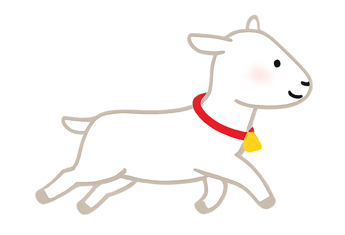

This is for main-window, where you can choose "Start game", settings for sounds, and highscores.

<!DOCTYPE html>
<html lang="fi">
<head>
  <meta charset="UTF-8">
<title>
Web-game
</title>
<meta charset="UTF-8">
<meta name="author" content="Marianna Taavitsainen, OAMK">
<meta name="keyword" content="html, OAMK">
<meta name="viewport" content="width=device-width, initial-scale=1.0">
<link rel="stylesheet" href="CSS/style.css">
<link rel="stylesheet" href='https://fonts.googleapis.com/css?family=Sofia|Afacad|Akatab|Alata' >

</head>

<body>
    <div id="gameSpace">
        <h1>Goat Runner</h1><br>

        <div class=titleBox>
            <button class=title onclick="startGame()">Start Game</button>
            <br>

            <button class=title onclick="openSettings()">Settings</button>
            <br>

            <button class=title onclick="showHighscores()">Highscores</button>
            <br>
        </div>
        <div id="goat">
            
        </div>
        <div id=road>
        </div>
    </div>

<script src="js/background.js"></script>
<script src="js/main.js" ></script>

</body>
</html>